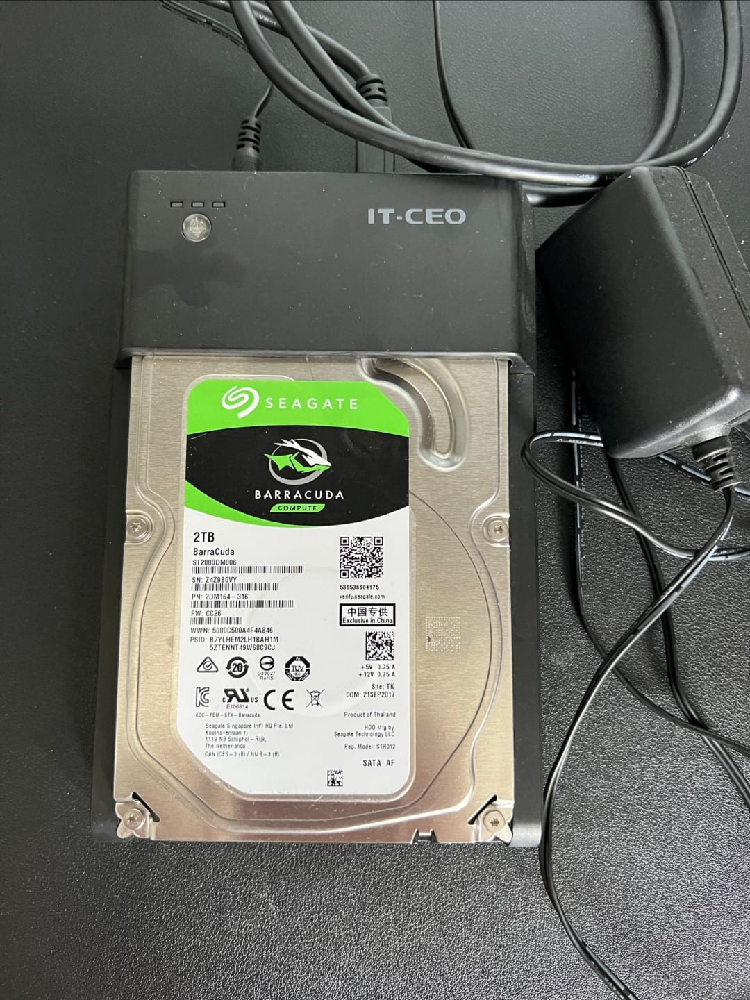

希捷酷狼 4TB（ST4000VN006）

NAS 专用机械硬盘，CMR 传统磁记录保证长时间写入不掉速，7200 转配 256MB 缓存，支持酷狼健康管理，是家庭 NAS 与大容量仓储盘的可靠选择。
客观评测
酷狼 4TB（ST4000VN006）为 3.5 英寸 SATA 机械硬盘，7200rpm 转速配 256MB 缓存，采用 CMR 传统磁记录，持续传输约 180MB/s，工作负载额定 180TB/年，MTBF 约 100 万小时。支持 IronWolf Health Management 健康管理，可与 NAS 系统联动监控盘体状态。3 年质保内包含一次数据恢复服务，对 NAS 用户而言多了一层容错。
主观点评
给家里的 NAS 插上四块酷狼之后，最直观的感受是安心。CMR 盘在阵列重建和长时间下载时不掉链子，健康管理功能偶尔发来状态报告也让人踏实。噪音方面，深夜里能听到轻微的寻道声，放客厅或书房需有心理准备。它注定不是追求速度的选择，但作为冷数据与影音仓库的基石，这种机械盘依然是不可替代的性价比方案。
优点与不足
- CMR 记录不掉速，NAS 长期写入稳定
- 支持健康管理，故障预警及时
- 含数据恢复服务，数据多一重保障
- 工作噪音与振动仍可察觉
- 速度与固态差距巨大，不适合做系统盘
参数规格
| 容量 | 4TB |
|---|---|
| 接口 | SATA 6Gb/s（3.5 英寸） |
| 转速 | 7200rpm |
| 缓存 | 256MB |
| 记录方式 | CMR（传统磁记录） |
| 持续传输 | 约 180MB/s |
| 工作负载 | 180TB/年 |
| 可靠性 | MTBF 约 100 万小时 |
| 健康管理 | 支持 IronWolf Health Management |
| 功耗 | 运行约 5.3W（待机约 0.5W） |
| 噪音 | 约 27dB（工作） |
| 质保 | 3 年质保（含 3 年内 1 次数据恢复服务） |